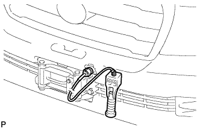
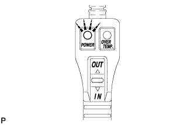
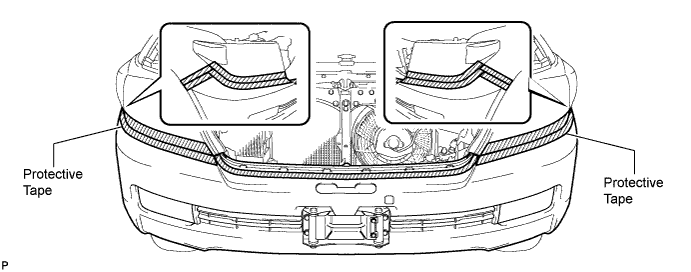
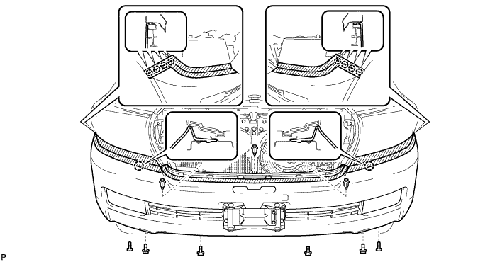
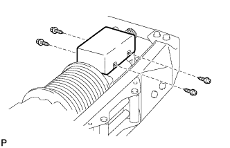
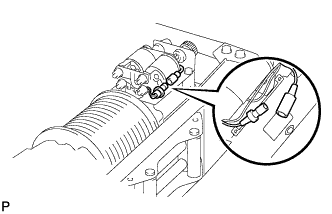
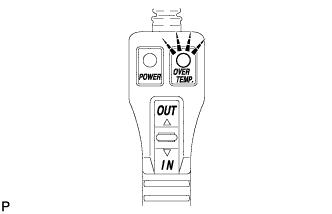

REMOTE CONTROL SWITCH > ON-VEHICLE INSPECTION |
| 1. INSPECT REMOTE CONTROL SWITCH ASSEMBLY |
 |
Connect the remote control switch connector.
 |
Turn the engine switch on (IG) and check that the power indicator light illuminates.
Press the remote control switch, and check that the winch operates.
Turn the engine switch off.
| 2. REMOVE FRONT FENDER SPLASH SHIELD SUB-ASSEMBLY LH |
 |
Remove the 3 bolts and screw.
Turn the clip indicated by the arrow in the illustration to remove the fender splash shield.
| 3. REMOVE FRONT FENDER SPLASH SHIELD SUB-ASSEMBLY RH |
| 4. REMOVE UPPER RADIATOR SUPPORT SEAL |
for Gasoline Engine:
Remove the upper radiator support seal (Click here).
for Diesel Engine:
Remove the upper radiator support seal (Click here).
| 5. REMOVE FRONT BUMPER WINCH COVER SUB-ASSEMBLY |
| 6. REMOVE RADIATOR GRILLE ASSEMBLY |
 |
Put protective tape around the radiator grille.
Remove the 3 screws.
Detach the 2 clips and 8 claws, and remove the radiator grille.
| 7. REMOVE FRONT BUMPER COVER |
Put protective tape around the bumper cover.

Using a T30 "TORX" socket, remove the 6 screws.

Remove the 3 clips, 4 screws and 4 bolts.
Detach the 10 claws.
w/o TOYOTA Parking Assist-sensor System, w/o Fog Light:
Disconnect the winch control wire connector and remove the bumper cover.
w/ TOYOTA Parking Assist-sensor System or w/ Fog Light:
Disconnect the No. 4 engine room wire connector and winch control wire connector and remove the bumper cover.

| 8. INSPECT OVERHEAT TEMPERATURE INDICATOR |
 |
Remove the 4 screws and cover.
 |
Disconnect the motor relay connector.
 |
Remove the 2 nuts.
Pull the bumper side winch control wire out of the bumper.
Connect the bumper side winch control wire connector to the vehicle side winch control wire connector.
Connect the bumper side winch control wire connector to the winch control switch connector.
 |
Turn the engine switch on (IG) and check that the overheat temperature indicator light illuminates and the buzzer sounds.
Turn the engine switch off.
Disconnect the bumper side winch control wire connector from the winch control switch connector.
Disconnect the bumper side winch control wire connector from the vehicle side winch control wire connector.
Pass the bumper side winch control wire through the bumper.
|
Install the 2 nuts.
Connect the motor relay connector.
Install the cover with the 4 screws.
| 9. INSTALL FRONT BUMPER COVER |
w/o TOYOTA Parking Assist-sensor System, w/o Fog Light:
Connect the winch control wire connector and attach the 10 claws to install the bumper cover.
w/ TOYOTA Parking Assist-sensor System or w/ Fog Light:
Connect the No. 4 engine room wire connector and winch control wire connector, and attach the 10 claws to install the bumper cover.
Install the 3 clips, 4 screws and 4 bolts.
Using a T30 "TORX" socket, install the 6 screws.
| 10. INSTALL RADIATOR GRILLE ASSEMBLY |
 |
Attach the 2 clips and 8 claws to install the radiator grille.
Install the 3 screws.
| 11. INSTALL FRONT BUMPER WINCH COVER SUB-ASSEMBLY |
| 12. INSTALL UPPER RADIATOR SUPPORT SEAL |
for Gasoline Engine:
Install the upper radiator support seal (Click here).
for Diesel Engine:
Install the upper radiator support seal (Click here).
| 13. INSTALL FRONT FENDER SPLASH SHIELD SUB-ASSEMBLY RH |
| 14. INSTALL FRONT FENDER SPLASH SHIELD SUB-ASSEMBLY LH |
|
Push in the clip indicated by the arrow in the illustration to install the fender splash shield.
Install the 3 bolts and screw.